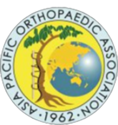
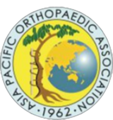

"Hello! Pakistan"
INTERNATIONAL PAK ORTHOCON 2022

35th International Pak Orthocon 2022 is a comprehensive academic activity aimed at a diverse audience consisting of Orthopaedic surgeons, residents and Allied health specialists. Over the years, this Pakistan Orthopaedic Association Annual meeting has become the leading academic activity of the country in the field of Orthopaedics with diverse academic content and renowned National and International faculty. The conference shall be commencing from 17th-20th November, 2022 at Serena Hotel, Islamabad, Pakistan and the theme of the conference is “Innovations-Shaping the Future of Orthopedic Surgery”. The conference shall be supported by multiple renowned regional and International associations and media partners.
 
